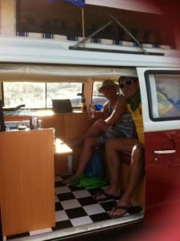
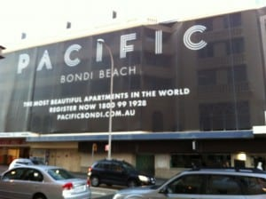

I started this Bondi Banter blog 16.5 years ago. At that time there weren’t any Facebook groups on Bondi and this blog served as a kind of interactive forum where people could share thoughts and comments and memories.
As time moved on various Facebook groups popped up and the banter that was happening in this blog had moved to other online spaces such as Facebook and Instagram. This shift, together with intense periods of work with very little spare time, meant that my blog posts became very infrequent…so infrequent that the last time I published a post here in March 2020, ‘Beach Closed’ was during the COVID pandemic, 6.5 years ago! And the post I published before that, ‘who needs tennis courts…’ was in 2015! The purpose that this weblog had initially served became somewhat redundant as the banter and memory-sharing took-off in other online spaces. This was a key reason for my lack of activity in bondibanter.com after 2015.
So clearly, for many years, all the signs have been pointing towards me to make the decision to retire this blog.
Most of my career has been spent working in the documentary film industry and I had been wanting to make a documentary film about Bondi for many years. In 2021, during the pandemic lockdowns, the opportunity to do this finally arrived. With the support of some fabulous collaborators, the short documentary film, ‘this bond i and Bondi’ was created. Bondi Banter had a critical role to play in the motivation to make the film which has screened in several local and international film festivals, has won awards, and is currently available to watch on SBS OnDemand.
Then, in 2024 and 2025 two major, unrelated, horrendous tragedies which occurred within a 20-month period, struck our beautiful suburb, shattering our hearts and causing ripples of pain & grief throughout the community.
I feel I need to acknowledge these events here in my final post. The first event was the attack that occurred in Bondi Junction’s Westfield Shopping Centre on Saturday afternoon, 13th April 2024. The second event was the unimaginable mass shooting at Bondi Beach on 14th December 2025. I was at both these places on both of those days but both times, very fortunately, had left the respective areas about 30-60minutes before the tragedies struck.
These events, together with other recent expressions of hatred and evil have rocked our community.
It feels like since the COVID pandemic, Life as we knew it has substantially changed. Things have never really gone back to how they were. Times are really tough for many people now. Financial pressures are hurting a lot of people everywhere, and politically, it feels like the world is in a bit of a mess.
I don’t want to be negative or a ‘downer’ but I also want to express that these events and factors have impacted Life in Bondi…the way we see our suburb, our city, our country and the world, has changed for many of us who live here (how could it not?!). It is almost the one-year anniversary of the massacre and that event together with an increase in other expressions of violence and hatred in our community has taken a toll on the collective consciousness and psychological well-being of many people I know. Yet we still hold a deep love and appreciation for living here, at this place and time.
Bondi is still my happy place for escape, solitude and joy, since through all ugly incidents and energy, I have turned to the beach and her ocean even more, as a source of healing, therapy and calm. The ocean water is magical. These days I swim throughout the year, have become accustomed to the cooler water temperatures and enjoy my regular dips and swims as an important part of my self-maintenance routine. If you haven’t tried this before, I encourage you to give it a go…if someone like me who has a very low tolerance for the cold can do it and enjoy it, you most likely will too!
It seems apt to now retire this blog as an interactive site in the year of 2026, as this year date is of course, also the postcode for Bondi, 2026!
I am hoping to resurrect ‘Bondi Banter’ again in the near future, perhaps in a different incarnation.
Although bondibanter.com will no longer be active – or more to the point, interactive – you will still be able to visit this blog as an archived entity and check out my other media-related projects (and possible resurrection of Bondi Banter in another form) by going to my webpage: mermaidrockmedia.com
As my parting words, I would like to thank each every one of you that found this blog, took the time to write a comment and contribute to the banter, or shared it. I’m very grateful for your support and engagement, and you also helped inspire me to make the film, ‘this bond i and Bondi.’ I have enjoyed the ride and hope you have too! With wishes for peace, love and the power of community, bondimermaid 🙂 (Carolyn).

Well, I’ve found the courage and I’m in the saddle…writing this now…
It has indeed been close to 5 years, that’s FIVE years! since I’ve published a post here. I wrote a couple of draft posts in that time, but never published them.
I guess I had this long hiatus for more than one reason, and not the least of which is that Life has been extremely busy and demanding for me these past few years, to the extent that I deprived myself of sleep for a long time. So I had to leave some things aside and accept that I can’t always do everything I want, when I want. Sometimes you just have to surrender for a bit. Also, during the last five years, so many more changes and developments have been going on in Bondi, which I’ve found a little overwhelming, and just needed some time to process everything. I think I’ve processed enough for now. Which brings me to this post…
Sometimes, in order for someone to take action on something that they need to do, it takes for a crisis to happen, to motivate the action. Maybe this is what is going on for me right now (see, I’m still processing…)
We are in a crisis at the moment. ‘We’ being not just Bondi, not just Sydney or NSW or Australia, but the whole world. This COVID-19 / corona virus pandemic has been the biggest game changer that most of us have ever seen in our entire lives, and it has literally just very quickly descended upon our world and is causing a huge disruption in all facets of our everyday lives.
Yesterday was a beautiful sunny, 28degree Sunday afternoon in Bondi. Normally, the beach and Campbell Parade would have been packed. But not yesterday. The beach itself was completely empty. This is because about 24 hours prior, Bondi Beach was officially closed by the authorities. It is still closed and will remain closed indefinitely. This is the first time that an indefinite closure of the beach has been enforced since World War II. The closure was a reaction to the lack of adherence by beach goers, to the social distancing rules that the authorities set up, in order to curb the spread of the virus. The behaviour of some beach goers seemed to disregard this directive, and has potentially put many people’s lives at risk. Thus the decision was made to close access to the beach and water. This public health order gives NSW Police law enforcement powers. Breaching the closure could land you in jail for 6 months or an $11,000 fine. As our politicians keep saying, these are ”unprecedented times.”


Image supplied: Courtesy Waverley Library
The notion that there was an abundance of such open recreational space in this now highly built-up environment fascinates me.
Admittedly, I am not quite sure of the why’s, the how’s and the what’s, but the tennis courts that have been on Wellington St, Bondi for what I understand has been about 60 years (i.e. since before I was born), will be re-developed into a block of apartments. How utterly surprising! Not!
It has been reported that The Sydney East Joint Regional Planning Panel (i.e. NSW Planning) recently approved this decision, despite Waverley Council objecting to the rezoning of this land. Residents and locals have also been objecting to this proposal but the development will still go ahead. I understand that the battle around this proposed development has been going for a few years. You can read more here.

image courtesy Rescue Bondi
The opportunity for residents to use this space for recreational, health and fitness purposes will be no longer. Another relatively short-sighted decision?
]]>Dr What Video! has always had the most amazing collection of films and documentaries available for hire. Over the years I have spent many hours perusing the shelves, and chatting to owners Neal, Carol and Daniel Crisford about films and film stuff. I’ve also used their post-production services for various projects.
I can’t help feel somewhat sad about the closure of this long-time Bondi Junction business. Dr What has not only played a part in inspiring and educating me on a personal level in terms of my appreciation and love for cinema, documentaries and screen culture, but has also been a great help in my professional work and development.

just a little section of the DVD's available to hire at Dr What
I figure I’m not alone in being one of the many loyal customers of this fabulous Bondi institution who has wondered where the hell did the name Dr What! come from for a video store? Well here’s a little bit of history about Dr What!…
The business first opened in about 1981. Apparently one of the original co-owners was a Mr Watt, thus the idea for the name. But at this time, the business was not a video/DVD store. It was really just selling VCRs. My dad, who was lover of movies, bought our first VCR from Dr What. I guess we would have been classified as “early adopters” of the VCR, since my family was one of the first to have a VCR among people we knew. At this time, c.1982, VCRs were not all that affordable and so weren’t selling as fast as anticipated. So in order to encourage consumers to purchase a VCR, the owners of Dr What figured that by stocking movies that were hireable on video, people might be persuaded to buy a VCR. The strategy worked, but the demand to watch videos became so great that the business shifted direction to become more of a video store than a electronic (VCR) shop. And this is how Dr What started and grew into becoming one of the few video stores in Sydney with an extensive selection of art-house movies and documentary films.
The Crisfords became the owners of Dr What in 1983. 31 years later it is the end of an era as they close the video store for good. This is sad for the local community. I for one, am very sorry to see Dr What close down. However, the Crisfords are saying that Dr What will continue to have an online presence and the post production services will still continue.
Thanks Dr What, for many years of quality entertainment and inspiration as well as assistance in my professional work.
You will be missed by many…
Well we had beach volleyball at the 2000 Olympic Games and the ice skating rink in winter for last few years. Now Waverley Council has said it will host the International Beach Polo Tournament at Bondi Beach on 9th May 2015. This one day event is expected to attract around 4000 people and will involve bringing in polo ponies to Bondi Beach and the building of infrastructure to support such an event.
The Council has approved the event “in principle” subject to a few conditions, including the satisfactory submission of a final Event Management Plan (which meets traffic, parking and complying regulatory requirements) at least 16 weeks prior to the event occupation period.
It’s worth noting that this event was not unanimously approved. Four councillors opposed the motion to approve this proposal at the Council’s Operations Committee Meeting held on 1 July 2014.
There has been little press about this proposal, but here is an article written by Emily Contador-Kelsall.
Of course such an idea is completely ludicrous to me – and I suspect to many other locals also. Aren’t there already healthy numbers of tourists in Bondi Beach? Aren’t people all around the world already aware of Brand Bondi?
Yet, for Waverley Council, having Bondi host the International Beach Polo Tournament, [such] a prestigious international sporting event, “will help promote and showcase Bondi Beach to the rest of the world and could bring social, physical and economic benefits to Bondi.”
Really?
I think Sally Betts might need to knock on a few residents’ doors and really gauge how many locals think that attracting another 4000 people to Bondi in one day (together with all the other repercussions that such an event would have on the area) is going to bring them social, physical and economic benefits!
]]>The architectural design of Boheme is OK, though it doesn’t really do all that much for me. I can see a building like this perched on a hill somewhere in the Northern Beaches area of Sydney. But I don’t really see how it blends into the Bondi art-deco urban landscape. It seems to be quite out of place here to me, although the price tag for such real estate is unfortunately not out of place here – these days. Boheme was apparently designed by “interior architects” Bates Smart.

'Boheme' perched above Adina hotel and apartments, Hall Street, Bondi
Still, although I was a little sad to see the demolition of the Hakoah Club (and a bit of Bondi history go with it), I’m trying to embrace this new Hall Street development as part and parcel of urban change. I can see how these additions and other recent changes to Hall Street could be attractive to Bondi visitors and tourists, but maybe less so for long-time locals!
Personally, I haven’t spent a lot of time there, but I have ducked into Harris Farm late at night here and there to do a bit of shopping, in quiet time, which has been convenient.
It appears that others, like Paul Paech, have also written about this change to Hall Street.
I’m very interested to hear what Bondi Banter visitors think of the changes in Hall Street, so please feel free to rant or banter away…
]]>
Mr Battlescar chilling out in the van on Queen Elizabeth Drive, 26/1/14
Not that it was something close to my heart. It was not a part of Bondi that I was particularly fond of, but many people have been asking why this hotel is now going to be turned into residential and rentable apartments.

goodbye Swiss Grand, make way for the Pacific Apartments...
Well as you might expect, the potential to make more money from residential apartments versus hotel rooms (which have slow and down times in the winter months) was an obvious reason for the sale.
Two penthouses were recently purchased (off-the-plan) of the new upcoming development, Pacific Bondi Beach, with the intention of combining them into one uber apartment.
When I discovered how much was recently paid for these two penthouses – amongst other feelings – I was somewhat stunned.
At $21million dollars (apart from being an obscene amount of money to pay for an apartment), this is apparently the highest price paid for an apartment in this country.
Now I know why I find everything so damn expensive about living here these days – because it IS!!
Well I could say a lot about this here – but I won’t.
I will restrain myself.
But please, don’t be shy. I would love to hear some reader’s thoughts…and to get you going, check out this link.
]]>So here we are, in Autumn, all of us wondering where on earth the last few months have gone! Life just seems to get faster and faster as you age.
As for Bondi, it is still as busy as ever, still impossible to find a parking spot on the weekends and still hosting many changes to its landscape.
There is now a proposal being highly publicised by Waverley Council, to significantly change the beachfront area of Bondi.
I won’t go into all these changes here since they are already well-documented online (and in the traditional media), but I just want to say that the proposal is not insignificant; clearly lots of money and energy have already gone into this research and development phase of the proposal.

Flyer from Have Your Say day, 5th May 2013
Apart from the North Bondi Surf Club clubhouse – which is still being built – if all the proposed changes to the Bondi Pavilion and Bondi Park are approved and green lit, they would probably represent the biggest visual changes made to the now famous beachfront area in many years.
Just the other day, Waverley Council held a Have Your Say day at the Pavilion. I went along to ask questions and learn a bit more about what exactly is being proposed. On the face of it, it all sounds OK. But I do think the Council are treading a bit conservatively putting an effort in to manage the spin. They’re being very careful in their choice of language, (and somewhat vague when it comes to logistics and details), regarding the proposed changes, and there are still a number of issues not really being considered. Like…What if you do remove the parking from the beachfront? then you have an underground car park with approximately the same no of spaces, BUT can you imagine the road rage when it would take you one hour to get out the car park on a busy hot summer’s day?? At least when you’re in a traffic jam on the beachfront on such days you get to look at the pretty sights that Bondi has to offer!
]]>